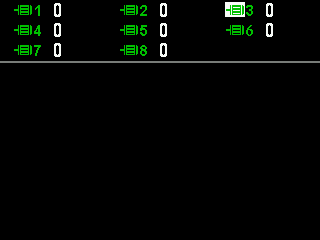
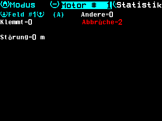

Der Bildschirm Motoren
Eine Kachel je Dosiermotor und ein Symbol je Fahrgassen-Aktuator — wie Sie zum Bildschirm gelangen, die Farben lesen, einen Motor aus der Überwachung nehmen und seine Einstellungen öffnen.
Der Bildschirm Motoren zeigt die elektrischen Dosiermotoren der Maschine, je eine Kachel, und die Fahrgassen-Aktuatoren. Auf diesen Bildschirm schauen Sie, wenn eine Reihe nicht mehr sät und Sie wissen wollen, ob der Motor der Grund ist. Er hat keine Überschrift: Er trägt nur nummerierte Symbole von Motoren und Aktuatoren — keine Mengen, keine Fläche, keine Geschwindigkeit.
Er ist vorhanden, wenn das Profil mindestens einen Saatmotor, einen Düngermotor oder einen Fahrgassen-Aktuator enthält, und wird nur oberhalb der Stufe „Fahrer“ angezeigt — schalten Sie zuerst die Stufe „Agronom“ frei (Stufe „Agronom“ freischalten). Dann folgt er auf den Bildschirm Statistik: dreimal „HOME“ vom Startbildschirm aus. „HOME“ führt weiter zum Bildschirm Sollmengen; „BACK“ zurück zum Startbildschirm.

Die Saatmotoren stehen in einer Leiste oben, nummeriert in der Reihenfolge des Profils. Darunter eine Leiste mit Düngermotoren, falls die Maschine welche hat — bei einer Maschine mit mehr als zwanzig Reihen und ohne Düngermotoren enthält die zweite Leiste die zweite Hälfte der Saatmotoren. Die Fahrgassen-Aktuatoren stehen unter den Leisten. Neben jedem Motor: die Drehzahl der angetriebenen Welle in U/min; bei Maschinen mit vielen Motoren entfällt sie, damit alle Kacheln Platz haben.
Eine Motorkachel lesen
Die Farbe des Symbols ist der Zustand. Symbol und Zeichen wechseln einmal pro Sekunde, solange der Zustand nicht normal ist.
| Symbol | Wert | Zustand |
|---|---|---|
| Motor, grün | die Drehzahl | Überwacht und angetrieben. |
| Motor und STOP, gelb | die Drehzahl | In Ordnung, aber die Ausbringung ist aus — am Vorgewende oder von Hand gesperrt. Keine Störung. |
| Motor, rot | die Drehzahl | Alarm. Das Alarmfenster nennt den Grund. |
| Motor und Kreuz, rot | XXX | Keine Verbindung zum Motorcontroller. Prüfen Sie seine Stromversorgung sowie sein Kabel und die Steckverbinder. |
| Motor und ?, rot | ??? | Das antwortende Gerät ist kein Motorcontroller, oder der Controller ist in seinem Aktualisierungsmodus geblieben. |
| Motor durchgestrichen | !!! | Aus der Überwachung genommen: weder angetrieben noch überwacht. |
Einen Fahrgassen-Aktuator lesen
| Symbol | Zustand |
|---|---|
| Eingezogen oder ausgefahren, grau, stetig | Er hat diese Stellung erreicht. |
| Eingezogen oder ausgefahren, gelb, stetig | Er fährt in diese Stellung. |
| Eingezogen und ausgefahren im Wechsel, gelb | Die Stellung ist nicht sicher. |
| Rotes Kreuz, blinkend | Keine Verbindung. |
| Rotes Fragezeichen, blinkend | Das antwortende Gerät ist kein Fahrgassen-Aktuator. |
| Aktuatorsymbol, rot, blinkend | Der Aktuator meldet einen Alarm. |
| Durchgestrichen, grau, blinkend | Aus der Überwachung genommen. |
Die erreichte Stellung ist grau, nicht grün: Nur Motoren sind hier grün.
Einen Motor wählen
Halten Sie „MENU“ gedrückt, um die Auswahl einzuschalten; sie steht auf dem ersten Motor, auf weißem Grund. „UP“ und „DOWN“ bewegen sich durch eine Leiste und weiter in die nächste Leiste und zu den Aktuatoren. Dann:
- „MENU“ öffnet das Kontextmenü des gewählten Motors oder Aktuators — Kontextmenü des Motors.
- „MINUS“ / „PLUS“ nehmen ihn aus der Überwachung oder in sie — Sensor in die Überwachung nehmen oder aus ihr nehmen.
- „BACK“ verlässt die Auswahl; ein zweites „BACK“ führt zurück zum Startbildschirm.

Der Servicebildschirm der Motoren
Der Kontextmenüpunkt „Elektromotoren“ (Stufe „Service“) öffnet einen Bildschirm für den Servicetechniker: Versionen, Motortyp, Soll- und Istdrehzahl, Fehlercode, Spannungen, Temperatur, Strom und sechzehn Zustandszeichen in der Ansicht „Register“ sowie Zähler je Feld in der Ansicht „Statistik“. Für die Aussaat brauchen Sie ihn nicht.

- Modus — „HOME“ schaltet zwischen den Ansichten um.
- Motornummer — „MINUS“ und „PLUS“ schalten den Motor um.
- Name der Ansicht.
- Feldnummer — „UP“ und „DOWN“ schalten sie um; (A) kennzeichnet das aktive Feld.
- Zähler — „Klemmt“, „Abbrüche“ und „Andere“. Über null rot.
- Störung — gefahrene Strecke mit dem Motor in Störung.
„BACK“ verlässt den Bildschirm. Gehört die Nummer zu keinem Motor des Profils, erscheint „Keine Dat.“.
Ihre Maschine tut etwas, das diese Seite nicht beantwortet? Schreiben Sie an support@agriwelt.com — es antwortet ein Ingenieur.